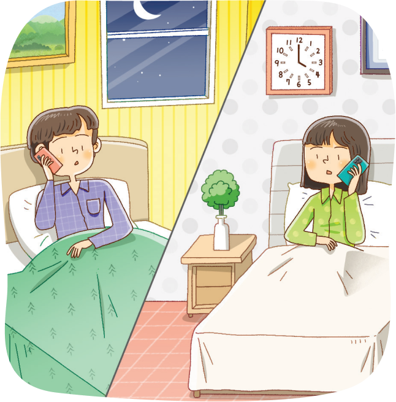

자료 읽기인간관계와 행복

미국의 한 대학교 교수이자 정신의학자인 조지 베일런트는 ‘인간관계가 삶의 질에 미치는 영향’에 대한 연구를 진행했다. 그는 사람들에게 설문 조사를 실시하여 “자신의 주변에는 새벽 4시에 마음 놓고 전화해 고민을 털어놓을 사람이 있나요?”라는 문항에 답변한 사람들을 대상으로 그들의 건강 상태를 수십 년 간 조사했다. 그리고 조사 결과 “있다.”라고 대답한 사람이 “없 다.”라고 대답한 사람보다 더 건강하고 오래 살 가능성이 높다 는 결론이 나왔다.
이러한 결과는 시험 성적이 높지 않아도, 부모님께 받는 용돈 이 적어도, 또 최신 전자 기기가 없어도 내가 정말 믿고 의지하 는 가족과 친구가 있다면 건강하고 행복하게 살 수 있다는 것을 보여 준다. 가족과 친구 등 내가 관계를 맺고 있는 사람들이 나 에게 재미나 기쁨과 같은 수만 가지 행복감을 주기 때문이다.
- 양곤성, 『십 대를 위한 행복 찾기 심리 실험실』
● 행복한 인간관계의 특징은 무엇일까?
한 사람이 상대방에게 일방적으로 의존하는 관계가 아닌 서로 의지할 수 있는 관계가 행복한 인간관계이다.